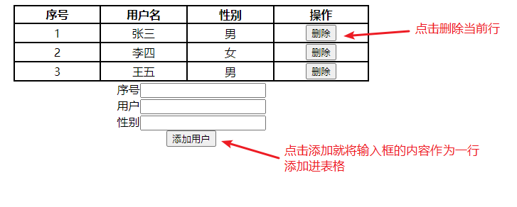

JavaScript&正则表达式¶
第一章 JavaScript¶
1. 学习目标¶
- 了解JavaScript的起源与特性
- 掌握JavaScript的基本语法
- 掌握JavaScript的DOM
- 掌握JavaScript的事件绑定
2. 内容讲解¶
2.1 JavaScript的起源¶
在1995年时，由Netscape公司的Brendan Eich，在网景导航者浏览器上首次设计实现而成。Netscape在最初将其脚本语言命名为LiveScript，因为Netscape与Sun合作，网景公司管理层希望蹭Java的热度，因此取名为JavaScript。
JavaScript总共分成三部分: ECMAScript(基本语法)、BOM(浏览器对象模型)、DOM(文档对象模型)
2.2 JavaScript的特性¶
2.2.1 脚本语言¶
JavaScript是一种解释型的脚本语言。不同于C、C++、Java等语言先编译后执行, JavaScript不会产生编译出来的字节码文件，而是在程序的运行过程中对源文件逐行进行解释。
2.2.2 基于对象¶
JavaScript是一种基于对象的脚本语言，它不仅可以创建对象，也能使用现有的对象。但是面向对象的三大特性：『封装』、『继承』、『多态』中，JavaScript能够实现封装，可以模拟继承，不支持多态，所以它不是一门面向对象的编程语言。
2.2.3 弱类型¶
JavaScript中也有明确的数据类型，但是声明一个变量后它可以接收任何类型的数据，并且会在程序执行过程中根据上下文自动转换类型。
2.2.4 事件驱动¶
JavaScript是一种采用事件驱动的脚本语言，它不需要经过Web服务器就可以对用户的输入做出响应。
2.2.5 跨平台性¶
JavaScript脚本语言不依赖于操作系统，仅需要浏览器的支持。因此一个JavaScript脚本在编写后可以带到任意机器上使用，前提是机器上的浏览器支持JavaScript脚本语言。目前JavaScript已被大多数的浏览器所支持。
2.3 入门程序¶
功能效果图

代码实现
<!DOCTYPE html>
<html lang="en">
<head>
<meta charset="UTF-8">
<title>JS的入门程序</title>
</head>
<body>
<!-- 在HTML代码中定义一个按钮 -->
<button type="button" id="helloBtn">SayHello</button>
<!--
目标: 点击按钮的时候弹出一个警告框
-->
<script type="text/javascript">
//1. 通过js代码获取到按钮对象
//document代表当前HTML文档
var btn = document.getElementById("helloBtn");
//2. 给获取到的btn对象绑定点击事件
btn.onclick = function () {
//弹出警告框
alert("hello world")
}
</script>
</body>
</html>
2.4 JavaScript的基本语法¶
2.4.1 JavaScript的引入方式¶
2.4.1.1 内部脚本方式¶
- JavaScript代码要写在script标签内
- script标签可以写在文档内的任意位置
- 为了能够方便查询或操作HTML标签（元素）script标签可以写在body标签后面
在我们的入门程序中使用的就是内部脚本方式引入的JavaScript
2.4.1.2 外部脚本方式¶
在script标签内通过src属性指定外部xxx.js文件的路径即可。但是要注意以下两点：
- 引用外部JavaScript文件的script标签里面不能写JavaScript代码
- 先引入，再使用
- script标签不能写成单标签

引入方式如下：
<!DOCTYPE html>
<html lang="en">
<head>
<meta charset="UTF-8">
<title>JS的引入方式</title>
<!--
建议在head中引入外部的js文件
-->
<script src="../js/outer.js"></script>
</head>
<body>
<!--
第一种引入方式: 内部引入方式，在HTML文档内部，通过script标签去编写js代码
-->
<!--
第二种引入方式: 外部引入方式，在当前项目中创建一个js文件，然后在需要引入的HTML里面使用script标签引入
一个script标签要么负责编写内部的js代码，要么负责引入外部的js文件
-->
<script type="text/javascript">
//调用外部js文件中的方法
showMessage()
alert("hello world")
</script>
</body>
</html>
2.4.2 声明和使用变量¶
2.4.2.1 JavaScript数据类型¶
-
基本数据类型
-
数值型number：JavaScript不区分整数、小数
-
字符串string：JavaScript不区分字符、字符串；单引号、双引号意思一样。
-
布尔型boolean：true、false
在JavaScript中，其他类型和布尔类型的自动转换。
true：非零的数值，非空字符串，非空对象
false：零，空字符串，null，undefined
例如："false"放在if判断中
// "false"是一个非空字符串，直接放在if判断中会被当作『真』处理 if("false"){ alert("true"); }else{ alert("false"); } -
引用类型
-
所有new出来的对象
- 用[]声明的数组
- 用{}声明的对象
2.4.2.2 变量¶
-
关键字：var,其实ECMAScript6之后建议使用let
-
数据类型：JavaScript变量是弱类型的，可以接收任意类型的数据
-
标识符：严格区分大小写
-
变量使用规则
-
如果使用了一个没有声明的变量，那么会在运行时报错
Uncaught ReferenceError: b is not defined
-
如果声明一个变量没有初始化，那么这个变量的值就是undefined
2.4.3 函数(重点)¶
2.4.3.1 内置函数¶
内置函数就是JavaScript中内置好的函数，我们可以直接使用
- 弹出警告框
alert("警告框内容");
- 弹出确认框
var result = confirm("确定要删除吗？");
if(result) {
// 执行删除
}
用户点击『确定』返回true，点击『取消』返回false
var result = confirm("老板，你真的不加个钟吗？");
if(result) {
console.log("老板点了确定，表示要加钟");
}else{
console.log("老板点了确定，表示不加钟");
}
- 在控制台打印日志
console.log("日志内容");

2.4.3.2 声明函数¶
声明函数就是使用者自己定义一个函数，它有两种写法:
写法1：
function sum(a, b) {
return a+b;
}
写法2：
var total = function() {
return a+b;
};
写法2可以这样解读：声明一个函数，相当于创建了一个『函数对象』，将这个对象的『引用』赋值给变量total。如果不给这个对象赋值，我们可以将其作为匿名函数使用(在后续学习内容中会用到)
2.4.3.3 调用函数¶
JavaScript中函数本身就是一种对象，函数名就是这个『对象』的『引用』。而调用函数的格式是：函数引用()。
function sum(a, b) {
return a+b;
}
var result = sum(2, 3);
console.log("result="+result);
或：
var total = function() {
return a+b;
}
var totalResult = total(3,6);
console.log("totalResult="+totalResult);
2.4.4 对象(重点)¶
JavaScript中没有『类』的概念，对于系统内置的对象可以直接创建使用。
2.4.4.1 使用new关键字创建对象¶
// 创建对象
var obj01 = new Object();
// 给对象设置属性和属性值
obj01.stuName = "tom";
obj01.stuAge = 20;
obj01.stuSubject = "java";
// 在控制台输出对象
console.log(obj01);
2.4.4.2 使用{}创建对象(常用)¶
// 创建对象
var obj02 = {
"soldierName":"john",
"soldierAge":35,
"soldierWeapon":"gun"
};
// 在控制台输出对象
console.log(obj02);
2.4.4.3 给对象设置函数属性¶
// 创建对象
var obj01 = new Object();
// 给对象设置属性和属性值
obj01.stuName = "tom";
obj01.stuAge = 20;
obj01.stuSubject = "java";
obj01.study = function() {
console.log(this.stuName + " is studying");
};
// 在控制台输出对象
console.log(obj01);
// 调用函数
obj01.study();
或者
// 创建对象
var obj02 = {
"soldierName":"john",
"soldierAge":35,
"soldierWeapon":"gun",
"soldierShoot":function(){
console.log(this.soldierName + " is using " + this.soldierWeapon);
}
};
// 在控制台输出对象
console.log(obj02);
// 调用函数
obj02.soldierShoot();
2.4.4.4 this关键字¶
this关键字只有两种情况：
- 在函数外面：this关键字指向window对象（代表当前浏览器窗口）
- 在函数里面：this关键字指向调用函数的对象
// 直接打印this
console.log(this);
// 函数中的this
// 1.声明函数
function getName() {
console.log(this.name);
}
// 2.创建对象
var obj01 = {
"name":"tom",
"getName":getName
};
var obj02 = {
"name":"jerry",
"getName":getName
};
// 3.调用函数
obj01.getName();
obj02.getName();
2.4.5 数组(重点)¶
2.4.5.1 使用new关键字创建数组¶
// 1.创建数组对象
var arr01 = new Array();
// 2.压入数据
arr01.push("apple");
arr01.push("orange");
arr01.push("banana");
arr01.push("grape");
// 3.遍历数组
for (var i = 0; i < arr01.length; i++) {
console.log(arr01[i]);
}
// 4.数组元素反序
arr01.reverse();
for (var i = 0; i < arr01.length; i++) {
console.log(arr01[i]);
}
// 5.数组元素拼接成字符串
var arrStr = arr01.join(",");
console.log(arrStr);
// 6.字符串拆分成数组
var arr02 = arrStr.split(",");
for (var i = 0; i < arr02.length; i++) {
console.log(arr02[i]);
}
// 7.弹出数组中最后一个元素
var ele = arr01.pop();
console.log(ele);
2.4.5.2 使用[]创建数组(常用)¶
// 8.使用[]创建数组
var arr03 = ["cat","dog","tiger"];
console.log(arr03);
2.4.6 JSON(最重点)¶
2.4.6.1 JSON格式的用途¶
在开发中凡是涉及到『跨平台数据传输』，JSON格式一定是首选。
2.4.6.2 JSON格式的说明¶
- JSON数据两端要么是{}，要么是[]
- {}定义JSON对象
- []定义JSON数组
- JSON对象的格式是：
{key:value,key:value,...,key:value}
- JOSN数组的格式是：
[value,value,...,value]
- key的类型固定是字符串
- value的类型可以是：
- 基本数据类型
- 引用类型：JSON对象或JSON数组
正因为JSON格式中value部分还可以继续使用JSON对象或JSON数组，所以JSON格式是可以『多层嵌套』的，所以JSON格式不论多么复杂的数据类型都可以表达。
//json的格式: {key:value,key:value}
var person1 = {
"name":"张三疯",
"age":189,
"address":"武当山"
}
//其实JSON对于前端而言，就是一个对象
//console.log(person1.name)
var person2 = {
"name":"张三疯",
"age":189,
"address":"武当山",
"wife":{
"name":"小花",
"age":18,
"address":"武当山下的小村庄"
}
}
//console.log(person2.wife.name)
var person3 = {
"name":"张三疯",
"age":189,
"address":"武当山",
"wife":{
"name":"小花",
"age":18,
"address":"武当山下的小村庄"
},
"sons":[
{
"name":"奥巴马",
"age":1,
"address":"武当山"
},
{
"name":"奥拉夫",
"age":2,
"address":"少林寺"
}
]
}
//json数组的格式: [{key:value,key:value},{key:value,key:value}]
//var personList = [person1,person2]
2.4.6.3 JSON对象和JSON字符串互转¶
- JSON对象转JSON字符串
var jsonObj = {"stuName":"tom","stuAge":20};
var jsonStr = JSON.stringify(jsonObj);
console.log(typeof jsonObj); // object
console.log(typeof jsonStr); // string
- JSON字符串转JSON对象
jsonObj = JSON.parse(jsonStr);
console.log(jsonObj); // {stuName: "tom", stuAge: 20}
2.5 JavaScript的DOM(最重点)¶
2.5.1 DOM的概念¶
DOM是Document Object Model的缩写，意思是『文档对象模型』——将HTML文档抽象成模型，再封装成对象方便用程序操作。
这是一种非常常用的编程思想：将现实世界的事物抽象成模型，这样就非常容易使用对象来量化的描述现实事物，从而把生活中的问题转化成一个程序问题，最终实现用应用软件协助解决现实问题。而在这其中『模型』就是那个连通现实世界和代码世界的桥梁。
2.5.2 DOM树的概念¶
浏览器把HTML文档从服务器上下载下来之后就开始按照『从上到下』的顺序『读取HTML标签』。每一个标签都会被封装成一个『对象』。
而第一个读取到的肯定是根标签html，然后是它的子标签head，再然后是head标签里的子标签……所以从html标签开始，整个文档中的所有标签都会根据它们之间的『父子关系』被放到一个『树形结构』的对象中。

这个包含了所有标签对象的整个树形结构对象就是JavaScript中的一个可以直接使用的内置对象：document。
例如，下面的标签结构：

会被解析为：

2.5.3 各个组成部分的类型¶
整个文档中的一切都可以看做Node。各个具体组成部分的具体类型可以看做Node类型的子类。
其实严格来说，JavaScript并不支持真正意义上的『继承』，这里我们借用Java中的『继承』概念，从逻辑上来帮助我们理解各个类型之间的关系。
| 组成部分 | 节点类型 | 具体类型 |
|---|---|---|
| 整个文档 | 文档节点 | Document |
| HTML标签 | 元素节点 | Element |
| HTML标签内的文本 | 文本节点 | Text |
| HTML标签内的属性 | 属性节点 | Attr |
| 注释 | 注释节点 | Comment |
2.5.4 父子关系¶

2.5.5 先辈后代关系¶

2.5.6 DOM操作¶
由于实际开发时基本上都是使用JavaScript的各种框架来操作，而框架中的操作方式和我们现在看到的原生操作完全不同，所以下面罗列的API仅供参考，不做要求。
2.5.6.1 在整个文档范围内查询元素节点¶
| 功能 | API | 返回值 |
|---|---|---|
| 根据id值查询 | document.getElementById(“id值”) | 一个具体的元素节 |
| 根据标签名查询 | document.getElementsByTagName(“标签名”) | 元素节点数组 |
| 根据name属性值查询 | document.getElementsByName(“name值”) | 元素节点数组 |
| 根据类名查询 | document.getElementsByClassName("类名") | 元素节点数组 |
2.5.6.2 在具体元素节点范围内查找子节点¶
| 功能 | API | 返回值 |
|---|---|---|
| 查找子标签 | element.children | 返回子标签数组 |
| 查找第一个子标签 | element.firstElementChild 【W3C考虑换行，IE≤8不考虑】 |
标签对象 |
| 查找最后一个子标签 | element.lastElementChild 【W3C考虑换行，IE≤8不考虑】 |
节点对象 |
2.5.6.3 查找指定元素节点的父节点¶
| 功能 | API | 返回值 |
|---|---|---|
| 查找指定元素节点的父标签 | element.parentElement | 标签对象 |
2.5.6.4 查找指定元素节点的兄弟节点¶
| 功能 | API | 返回值 |
|---|---|---|
| 查找前一个兄弟标签 | node.previousElementSibling 【W3C考虑换行，IE≤8不考虑】 |
标签对象 |
| 查找后一个兄弟标签 | node.nextElementSibling 【W3C考虑换行，IE≤8不考虑】 |
标签对象 |
扩展内容(根据选择器查找标签)¶
| 功能 | API | 返回值 |
|---|---|---|
| 根据选择器查找一个标签 | document.querySelector("选择器") | 标签对象 |
| 根据选择器查找多个标签 | document.querySelectorAll("选择器") | 标签数组 |
<!DOCTYPE html>
<html lang="en">
<head>
<meta charset="UTF-8">
<title>DOM查找节点</title>
</head>
<body>
<input type="text" id="username">
<input type="text" class="c1">
<input type="text" class="c1">
<div>
<div></div>
<div></div>
</div>
<script>
//根据id查询标签
var elementById = document.getElementById("username");
//console.log(elementById)
//根据类名查询标签
var elementsByClassName = document.getElementsByClassName("c1");
//console.log(elementsByClassName)
//根据标签名查询标签
var elementsByTagName = document.getElementsByTagName("input");
//console.log(elementsByTagName)
//查找子节点: 查找body的所有子标签,要注意文本也属于子节点
/*var childNodes = document.getElementsByTagName("body")[0].childNodes;
console.log(childNodes)*/
//查找子标签: children
var children = document.getElementsByTagName("body")[0].children;
//console.log(children)
//查找id为username的标签的父节点
var parentNode = document.getElementById("username").parentNode;
//console.log(parentNode)
//查找id为username的标签的前一个兄弟标签
var previousElementSibling = document.getElementById("username").previousElementSibling;
//console.log(previousElementSibling)
//查找id为username的标签的后一个兄弟标签
var nextElementSibling = document.getElementById("username").nextElementSibling;
//console.log(nextElementSibling)
//根据选择器查找标签:document.querySelector("选择器")根据选择器查找一个标签, document.querySelectorAll("选择器")根据选择器查找多个标签
//什么是选择器: 用于查找标签的一些表达式，其中最基本的三种选择器是:ID选择器、类选择器、标签选择器
//选择器参考jQuery的文档
//查找id为username的标签，使用的是id选择器
var ipt1 = document.querySelector("#username");
//console.log(ipt1)
//查找body内的所有后代div，用的是层级选择器
var ipts = document.querySelectorAll("body div");
//查找id为username的标签的后面第一个兄弟
var i1 = document.querySelector("#username+input");
//查找id为username的标签的后面的所有兄弟
var i2 = document.querySelectorAll("#username~input");
console.log(i2)
</script>
</body>
</html>
2.5.6.5 属性操作¶
| 需求 | 操作方式 |
|---|---|
| 读取属性值 | 元素对象.属性名 |
| 修改属性值 | 元素对象.属性名=新的属性值 |
2.5.6.6 标签体的操作¶
| 需求 | 操作方式 |
|---|---|
| 获取或者设置标签体的文本内容 | element.innerText |
| 获取或者设置标签体的内容 | element.innerHTML |
<!DOCTYPE html>
<html lang="en">
<head>
<meta charset="UTF-8">
<title>操作标签的属性和文本</title>
</head>
<body>
<input type="text" id="username" name="username" />
<div id="d1">
<h1>你好世界</h1>
</div>
<script>
//目标: 获取id为username的输入框的value
//1. 找到要操作的标签
var ipt = document.getElementById("username");
//2. 设置标签的value属性值
ipt.value = "张三"
//3. 获取标签的value属性的值
var value = ipt.value;
console.log(value)
//获取id为d1的div中的文本内容
//获取标签的文本: element.innerText,获取文本的时候会将左右两端的空格去掉
var innerText = document.getElementById("d1").innerText;
console.log(innerText)
//获取标签体的内容: element.innerHTML,获取标签体的内容
var innerHTML = document.getElementById("d1").innerHTML;
console.log(innerHTML)
//设置标签体的内容:建议使用innerHTML，如果是使用innerText的话它会将标签当做普通文本处理
document.getElementById("d1").innerHTML = "<h1>hello world</h1>"
</script>
</body>
</html>
2.5.6.7 DOM增删改操作¶
| API | 功能 |
|---|---|
| document.createElement(“标签名”) | 创建元素节点并返回，但不会自动添加到文档中 |
| document.createTextNode(“文本值”) | 创建文本节点并返回，但不会自动添加到文档中 |
| element.appendChild(ele) | 将ele添加到element所有子节点后面 |
| parentEle.insertBefore(newEle,targetEle) | 将newEle插入到targetEle前面 |
| parentEle.replaceChild(newEle, oldEle) | 用新节点替换原有的旧子节点 |
| element.remove() | 删除某个标签 |
| element.innerHTML | 读写HTML代码 |
<!DOCTYPE html>
<html lang="en">
<head>
<meta charset="UTF-8">
<title>创建和删除标签</title>
</head>
<body>
<ul id="city">
<li id="bj">北京</li>
<li id="sh">上海</li>
<li id="sz">深圳</li>
<li id="gz">广州</li>
</ul>
<script>
//目标1: 在城市列表的最后添加一个子标签 <li id="cs">长沙</li>
//1. 创建一个li标签 <li></li>
var liElement = document.createElement("li");
//2. 给创建的li标签设置id属性和文本 <li id="cs">长沙</li>
liElement.id = "cs"
liElement.innerText = "长沙"
//3. 将创建的li标签添加到城市列表中（ul）
var cityUl = document.getElementById("city");
//父.appendChild(子)将子标签添加到父标签的最后面
//cityUl.appendChild(liElement)
//目标2:在城市列表的深圳之前添加一个子标签 <li id="cs">长沙</li>
//获取到深圳这个标签
var szElement = document.getElementById("sz");
//父.insertBefore(新标签,参照标签)
//cityUl.insertBefore(liElement,szElement)
//目标3: 在城市列表中添加一个子标签替换深圳 <li id="cs">长沙</li>
//父.replaceChild(新标签,被替换的标签)
//cityUl.replaceChild(liElement,szElement)
//目标4: 在城市列表中删除深圳
//szElement.remove()
//目标5: 清除城市列表中的所有城市,保留城市列表标签ul
cityUl.innerHTML = ""
</script>
</body>
</html>
2.5.7 JavaScript的事件驱动(很重要)¶
2.5.7.1 事件的概念¶
- HTML 事件是发生在 HTML 元素上的“事情”， 是浏览器或用户做的某些事情
- 事件通常与函数配合使用，这样就可以通过发生的事件来驱动函数执行。
2.5.7.2 常见事件¶
| 属性 | 此事件发生在何时... |
|---|---|
| onclick | 当用户点击某个对象时调用的事件句柄。 |
| ondblclick | 当用户双击某个对象时调用的事件句柄。 |
| onchange | 域的内容被改变。 |
| onblur | 元素失去焦点。 |
| onfocus | 元素获得焦点。 |
| onload | 一张页面或一幅图像完成加载。 |
| onsubmit | 确认按钮被点击；表单被提交。 |
| onkeydown | 某个键盘按键被按下。 |
| onkeypress | 某个键盘按键被按住。 |
| onkeyup | 某个键盘按键被松开。 |
| onmousedown | 鼠标按钮被按下。 |
| onmouseup | 鼠标按键被松开。 |
| onmouseout | 鼠标从某元素移开。 |
| omouseover | 鼠标移到某元素之上。 |
| onmousemove | 鼠标被移动。 |
2.5.7.3 事件绑定的方式¶
2.5.7.3.1 普通函数方式¶
说白了设置标签的属性
<标签 属性="js代码，调用函数"></标签>
2.5.7.3.2 匿名函数方式¶
<script>
标签对象.事件属性 = function(){
//执行一段代码
}
</script>
2.5.7.4 事件的使用介绍¶
- 点击事件
需求: 没点击一次按钮 弹出hello...
<input type="button" value="按钮" onclick="fn1()">
<input type="button" value="另一个按钮" id="btn">
<script>
//当点击的时候要调用的函数
function fn1() {
alert("我被点击了...")
}
//给另外一个按钮，绑定点击事件:
//1.先根据id获取标签
let btn = document.getElementById("btn");
//2. 设置btn的onclick属性(绑定事件)
//绑定命名函数
//btn.onclick = fn1
//绑定匿名函数
btn.onclick = function () {
console.log("点击了另外一个按钮")
}
</script>
- 获得焦点(onfocus)和失去焦点(onblur)
需求:给输入框设置获得和失去焦点
var ipt = document.getElementById("ipt");
//绑定获取焦点事件
ipt.onfocus = function () {
console.log("获取焦点了...")
}
//绑定失去焦点事件
ipt.onblur = function () {
console.log("失去焦点了...")
}
- 内容改变(onchange)
需求: 给select设置内容改变事件
<body>
<!--内容改变(onchange)-->
<select onchange="changeCity(this)">
<option value="bj">北京</option>
<option value="sh">上海</option>
<option value="sz">深圳</option>
</select>
</body>
<script>
function changeCity(obj) {
console.log("城市改变了"+obj.value);
}
</script>
- 键盘相关的, 键盘按下(onkeydown) 键盘抬起(onkeyup)
//给输入框绑定键盘按键按下和抬起事件
ipt.onkeydown = function () {
//当按键按下的时候，数据并没有到达输入框
//输出输入框里面的内容
//console.log(ipt.value)
}
ipt.onkeyup = function () {
//输出输入框的内容:当键盘按键抬起的时候，数据已经到达了输入框
console.log(ipt.value)
}
- 鼠标相关的, 鼠标在xx之上(onmouseover ), 鼠标按下(onmousedown),鼠标离开(onmouseout)
//给输入框绑定鼠标移入事件
ipt.onmouseover = function () {
console.log("鼠标移入了...")
}
//给输入框绑定鼠标移出事件
ipt.onmouseout = function () {
console.log("鼠标移出了...")
}
2.5.7.5 综合案例¶
需求

代码实现
<!DOCTYPE html>
<html lang="en">
<head>
<meta charset="UTF-8">
<title>综合案例</title>
<style>
table,tr,td,th{
border: 1px solid black;
width: 500px;
text-align: center;
margin: auto;
}
div{
text-align: center;
}
</style>
</head>
<body>
<table cellspacing="0" id="tb">
<tr>
<th>序号</th>
<th>用户名</th>
<th>性别</th>
<th>操作</th>
</tr>
<tr>
<td>1</td>
<td>张三</td>
<td>男</td>
<td>
<button onclick="deletePerson(this)">删除</button>
</td>
</tr>
<tr>
<td>2</td>
<td>李四</td>
<td>女</td>
<td>
<button onclick="deletePerson(this)">删除</button>
</td>
</tr>
<tr>
<td>3</td>
<td>王五</td>
<td>男</td>
<td>
<button onclick="deletePerson(this)">删除</button>
</td>
</tr>
</table>
<div>
<form action="#">
序号<input type="text" name="num" id="num"><br/>
用户<input type="text" name="username" id="username"/><br/>
性别<input type="text" name="gender" id="gender"/><br/>
<input type="button" value="添加用户" onclick="addPerson()"/>
</form>
</div>
<script>
//目标1:点击删除按钮，删除当前行
//给所有按钮绑定点击事件
function deletePerson(obj) {
//此时obj就是你点击的那个按钮
//我们要删除的就是obj的爷爷
obj.parentElement.parentElement.remove()
}
function addPerson() {
//添加用户
//1. 获取序号、用户名、性别
var numElement = document.getElementById("num");
var num = numElement.value;
var usernameElement = document.getElementById("username");
var username = usernameElement.value;
var genderElement = document.getElementById("gender");
var gender = genderElement.value;
//2. 将获取到的序号、用户名、性别添加到td中，td放到tr中，tr添加到table中
//2.1 创建一行 <tr></tr>
var trElement = document.createElement("tr");
//2.2 往tr中添加标签体内容
trElement.innerHTML = "<td>"+num+"</td>\n" +
" <td>"+username+"</td>\n" +
" <td>"+gender+"</td>\n" +
" <td>\n" +
" <button onclick=\"deletePerson(this)\">删除</button>\n" +
" </td>"
//2.3 将tr添加到表格中
var tb = document.getElementById("tb");
tb.appendChild(trElement)
//3. 清空序号、用户名、性别
numElement.value = ""
usernameElement.value = ""
genderElement.value = ""
}
</script>
</body>
</html>
第二章 正则表达式¶
1. 学习目标¶
- 掌握正则表达式的作用
- 掌握正则表达式的语法
- 了解常见的正则表达式
2. 内容讲解¶
2.1 正则表达式的概念¶
正则表达式是对字符串操作的一种逻辑公式，就是用事先定义好的一些特定字符、及这些特定字符的组合，组成一个“规则字符串”，这个“规则字符串”用来表达对字符串的一种过滤逻辑。用我们自己的话来说: 正则表达式用来校验字符串是否满足一定的规则的公式
2.2 正则表达式的用途¶
所以正则表达式有三个主要用途：
- 模式验证: 检测某个字符串是否符合规则，例如检测手机号、身份证号等等是否符合规范
- 匹配读取: 将目标字符串中满足规则的部分读取出来，例如将整段文本中的邮箱地址读取出来
- 匹配替换: 将目标字符串中满足标准的部分替换为其他字符串,例如将整段文本中的"hello"替换成"haha"
2.3 正则表达式的语法¶
2.3.1 创建正则表达式对象¶
- 对象形式：
var reg = new RegExp("正则表达式")当正则表达式中有"/"那么就使用这种 - 直接量形式：
var reg = /正则表达式/一般使用这种声明方式
2.3.2 正则表达式入门案例¶
2.3.2.1 模式验证: 校验字符串中是否包含'o'字母¶
注意：这里是使用正则表达式对象来调用方法。
// 创建一个最简单的正则表达式对象
var reg = /o/;
// 创建一个字符串对象作为目标字符串
var str = 'Hello World!';
// 调用正则表达式对象的test()方法验证目标字符串是否满足我们指定的这个模式，返回结果true
console.log("字符串中是否包含'o'="+reg.test(str));
2.3.2.2 匹配读取: 读取字符串中的所有'o'¶
//匹配读取: 读取一个字符串中的所有'l'字母
// g表示全文查找,如果不使用g那么就只能查找到第一个匹配的内容
//1. 编写一个正则表达式
var reg2 = /l/g
//2. 使用正则表达式去读取字符串
var arr = str.match(reg2);
console.log(arr)
2.3.2.3 匹配替换: 将字符串中的第一个'o'替换成'@'¶
var newStr = str.replace(reg,'@');
// 只有第一个o被替换了，说明我们这个正则表达式只能匹配第一个满足的字符串
console.log("str.replace(reg)="+newStr);//Hell@ World!
// 原字符串并没有变化，只是返回了一个新字符串
console.log("str="+str);//str=Hello World!
2.3.3 正则表达式的匹配模式¶
2.3.3.1 全文查找¶
如果不使用g对正则表达式对象进行修饰，则使用正则表达式进行查找时，仅返回第一个匹配；使用g后，返回所有匹配。
// 目标字符串
var targetStr = 'Hello World!';
// 没有使用全局匹配的正则表达式
var reg = /[A-Z]/;
// 获取全部匹配
var resultArr = targetStr.match(reg);
// 数组长度为1
console.log("resultArr.length="+resultArr.length);
// 遍历数组，发现只能得到'H'
for(var i = 0; i < resultArr.length; i++){
console.log("resultArr["+i+"]="+resultArr[i]);
}
对比代码：
// 目标字符串
var targetStr = 'Hello World!';
// 使用了全局匹配的正则表达式
var reg = /[A-Z]/g;
// 获取全部匹配
var resultArr = targetStr.match(reg);
// 数组长度为2
console.log("resultArr.length="+resultArr.length);
// 遍历数组，发现可以获取到“H”和“W”
for(var i = 0; i < resultArr.length; i++){
console.log("resultArr["+i+"]="+resultArr[i]);
}
2.3.3.2 忽略大小写¶
//目标字符串
var targetStr = 'Hello WORLD!';
//没有使用忽略大小写的正则表达式
var reg = /o/g;
//获取全部匹配
var resultArr = targetStr.match(reg);
//数组长度为1
console.log("resultArr.length="+resultArr.length);
//遍历数组，仅得到'o'
for(var i = 0; i < resultArr.length; i++){
console.log("resultArr["+i+"]="+resultArr[i]);
}
对比代码：
//目标字符串
var targetStr = 'Hello WORLD!';
//使用了忽略大小写的正则表达式
var reg = /o/gi;
//获取全部匹配
var resultArr = targetStr.match(reg);
//数组长度为2
console.log("resultArr.length="+resultArr.length);
//遍历数组，得到'o'和'O'
for(var i = 0; i < resultArr.length; i++){
console.log("resultArr["+i+"]="+resultArr[i]);
}
2.3.3.3 多行查找¶
不使用多行查找模式，目标字符串中不管有没有换行符都会被当作一行。
//目标字符串1
var targetStr01 = 'Hello\nWorld!';
//目标字符串2
var targetStr02 = 'Hello';
//匹配以'Hello'结尾的正则表达式，没有使用多行匹配
var reg = /Hello$/;
console.log(reg.test(targetStr01));//false
console.log(reg.test(targetStr02));//true
对比代码：
//目标字符串1
var targetStr01 = 'Hello\nWorld!';
//目标字符串2
var targetStr02 = 'Hello';
//匹配以'Hello'结尾的正则表达式，使用了多行匹配
var reg = /Hello$/m;
console.log(reg.test(targetStr01));//true
console.log(reg.test(targetStr02));//true
2.3.4 元字符¶
在正则表达式中被赋予特殊含义的字符，不能被直接当做普通字符使用。如果要匹配元字符本身，需要对元字符进行转义，转义的方式是在元字符前面加上“\”，例如：^
2.3.4.1 常用的元字符¶
| 代码 | 说明 |
|---|---|
| . | 匹配除换行字符以外的任意字符。 |
| \w | 匹配字母或数字或下划线等价于[a-zA-Z0-9_] |
| \W | 匹配任何非单词字符。等价于[^A-Za-z0-9_] |
| \s | 匹配任意的空白符，包括空格、制表符、换页符等等。等价于[\f\n\r\t\v]。 |
| \S | 匹配任何非空白字符。等价于[^\f\n\r\t\v]。 |
| \d | 匹配数字。等价于[0-9]。 |
| \D | 匹配一个非数字字符。等价于[^0-9] |
| \b | 匹配单词的开始或结束 |
| ^ | 匹配字符串的开始，但在[]中使用表示取反 |
| $ | 匹配字符串的结束 |
2.3.4.2 例子一¶
var str = 'one two three four';
// 匹配全部空格
var reg = /\s/g;
// 将空格替换为@
var newStr = str.replace(reg,'@'); // one@two@three@four
console.log("newStr="+newStr);
2.3.4.3 例子二¶
var str = '今年是2014年';
// 匹配至少一个数字
var reg = /\d+/g;
str = str.replace(reg,'abcd');
console.log('str='+str); // 今年是abcd年
2.3.4.4 例子三¶
var str01 = 'I love Java';
var str02 = 'Java love me';
// 匹配以Java开头
var reg = /^Java/g;
console.log('reg.test(str01)='+reg.test(str01)); // flase
console.log("<br />");
console.log('reg.test(str02)='+reg.test(str02)); // true
2.3.4.5 例子四¶
var str01 = 'I love Java';
var str02 = 'Java love me';
// 匹配以Java结尾
var reg = /Java$/g;
console.log('reg.test(str01)='+reg.test(str01)); // true
console.log("<br />");
console.log('reg.test(str02)='+reg.test(str02)); // flase
2.3.5 字符集合¶
| 语法格式 | 示例 | 说明 |
|---|---|---|
| [字符列表] | 正则表达式：[abc] 含义：目标字符串包含abc中的任何一个字符 目标字符串：plain 是否匹配：是 原因：plain中的“a”在列表“abc”中 | 目标字符串中任何一个字符出现在字符列表中就算匹配。 |
| [^字符列表] | [^abc] 含义：目标字符串包含abc以外的任何一个字符 目标字符串：plain 是否匹配：是 原因：plain中包含“p”、“l”、“i”、“n” | 匹配字符列表中未包含的任意字符。 |
| [字符范围] | 正则表达式：[a-z] 含义：所有小写英文字符组成的字符列表 正则表达式：[A-Z] 含义：所有大写英文字符组成的字符列表 | 匹配指定范围内的任意字符。 |
var str01 = 'Hello World';
var str02 = 'I am Tom';
//匹配abc中的任何一个
var reg = /[abc]/g;
console.log('reg.test(str01)='+reg.test(str01));//flase
console.log('reg.test(str02)='+reg.test(str02));//true
2.3.6 出现次数¶
| 代码 | 说明 |
|---|---|
| * | 出现零次或多次 |
| + | 出现一次或多次 |
| ? | 出现零次或一次 |
| {n} | 出现n次 |
| {n,} | 出现n次或多次 |
| {n,m} | 出现n到m次 |
console.log("/[a]{3}/.test('aa')="+/[a]{3}/g.test('aa')); // flase
console.log("/[a]{3}/.test('aaa')="+/[a]{3}/g.test('aaa')); // true
console.log("/[a]{3}/.test('aaaa')="+/[a]{3}/g.test('aaaa')); // true
2.3.7 在正则表达式中表达『或者』¶
使用符号：|
// 目标字符串
var str01 = 'Hello World!';
var str02 = 'I love Java';
// 匹配'World'或'Java'
var reg = /World|Java/g;
console.log("str01.match(reg)[0]="+str01.match(reg)[0]);//World
console.log("str02.match(reg)[0]="+str02.match(reg)[0]);//Java
2.4 常用正则表达式¶
| 需求 | 正则表达式 |
|---|---|
| 用户名 | /^[a-zA-Z_][a-zA-Z_-0-9]{5,9}$/ |
| 密码 | /^[a-zA-Z0-9_-\@#\&*]{6,12}$/ |
| 前后空格 | /^\s+|\s+$/g |
| 电子邮箱 | /^[a-zA-Z0-9_.-]+@([a-zA-Z0-9-]+[.]{1})+[a-zA-Z]+$/ |
本文总阅读量次